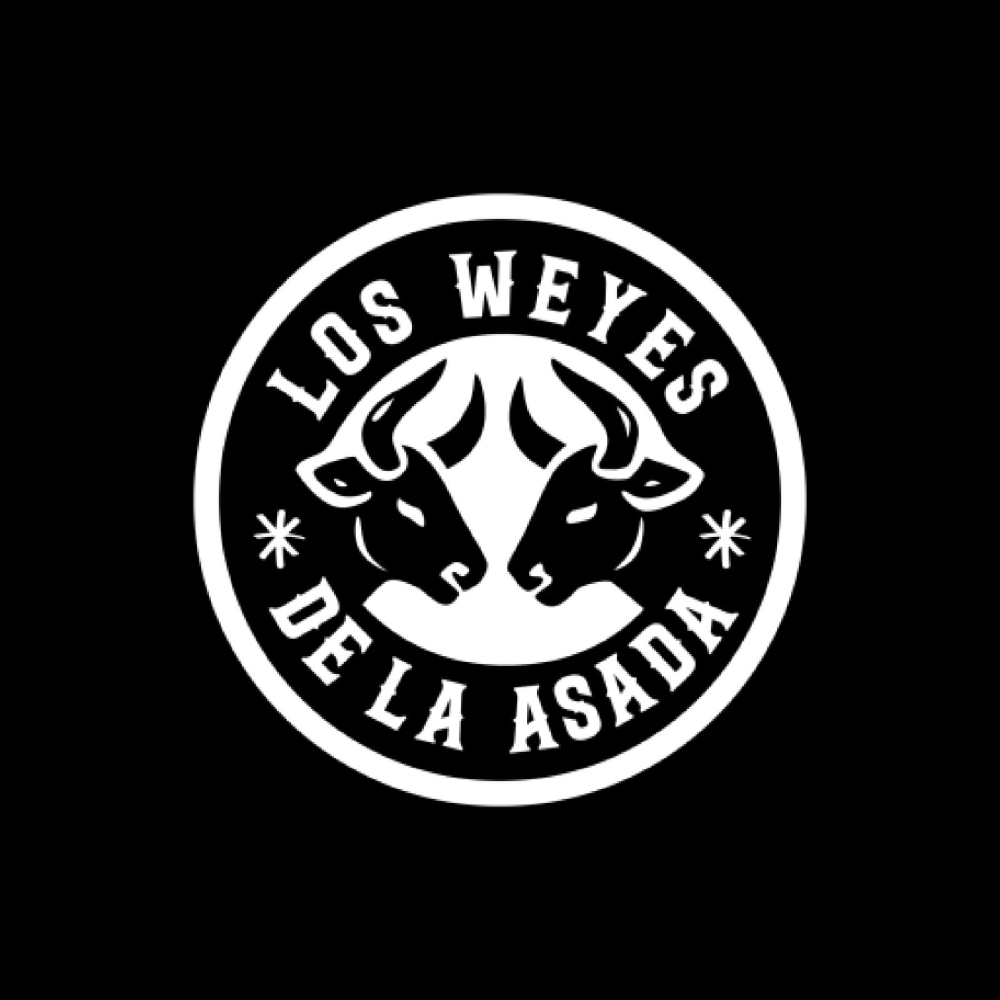

Skip to content

Menu
Home
Menu
Photos
Reviews
Our story
Visit
Los Weyes
Photos
Tacos, nachos and the truck after dark.
Tacos with grilled squash and cilantro
A plate straight off the truck
Asada plate with tortillas
Sandwich with a side of cucumber
Hungry yet?
Call or stop by the truck.
Call (210) 788-9121
Call
Call (210) 788-9121